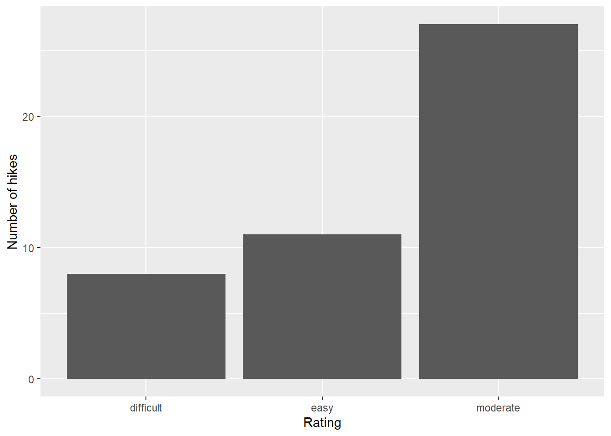
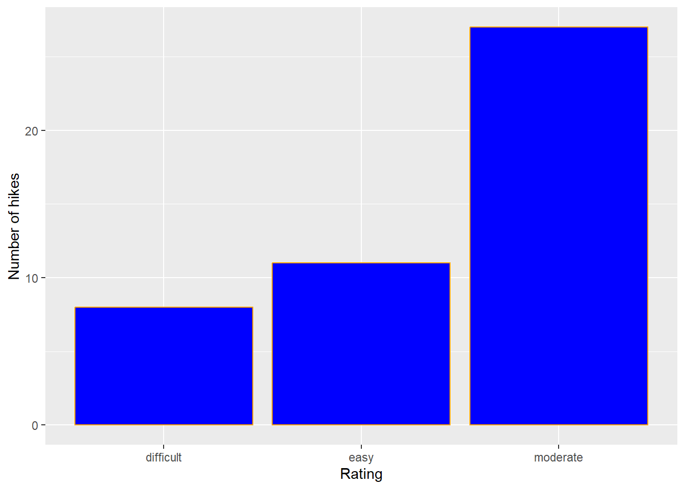
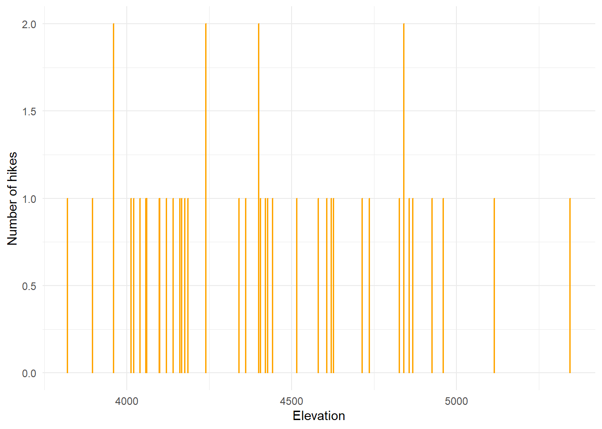
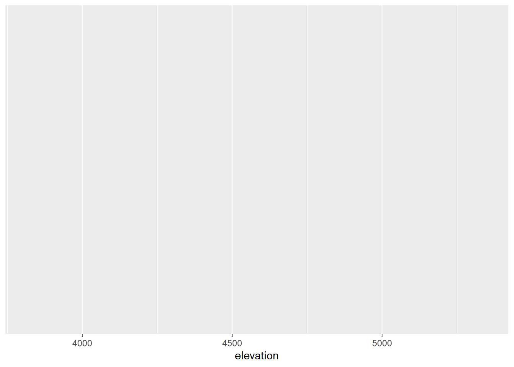
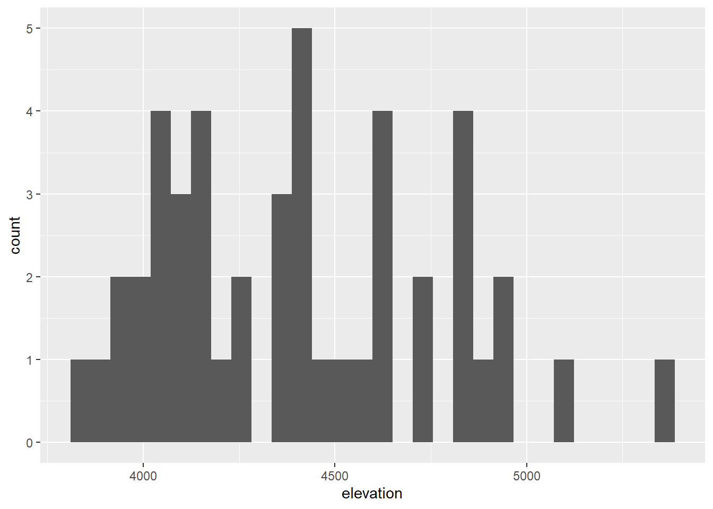
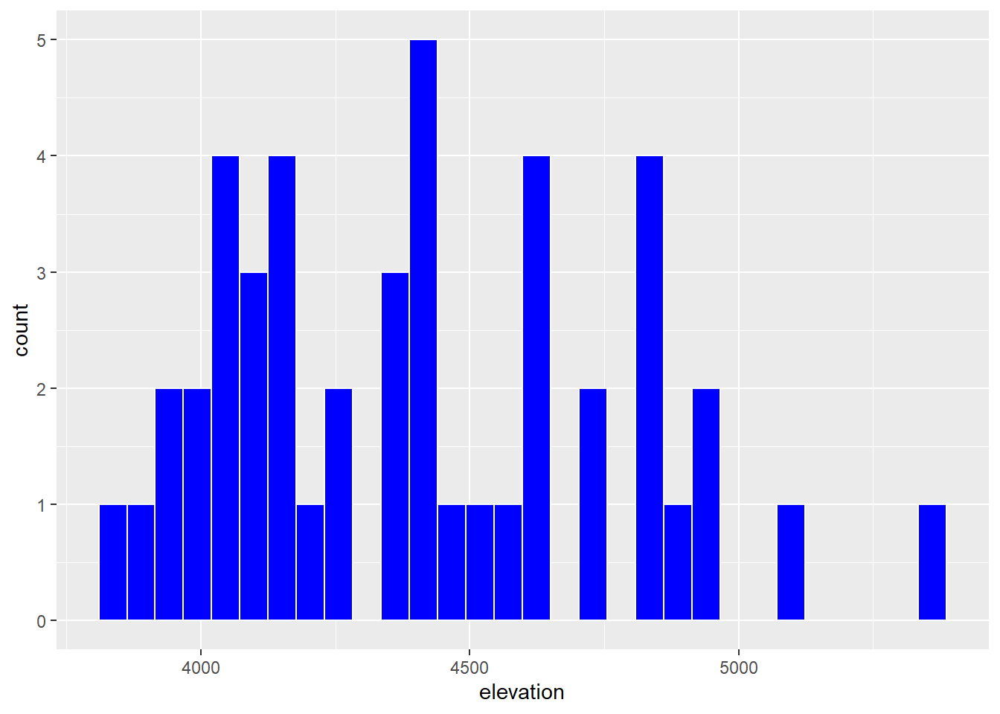
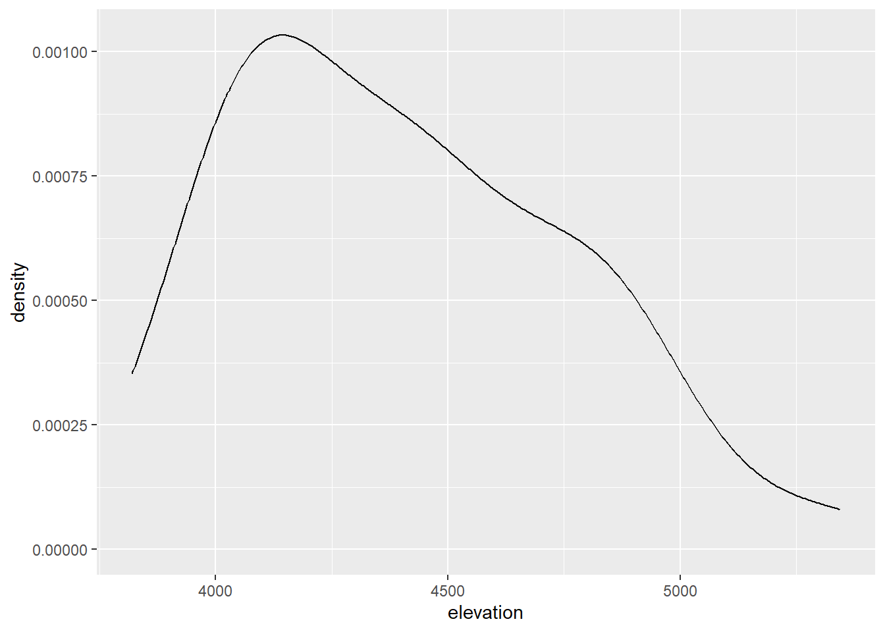
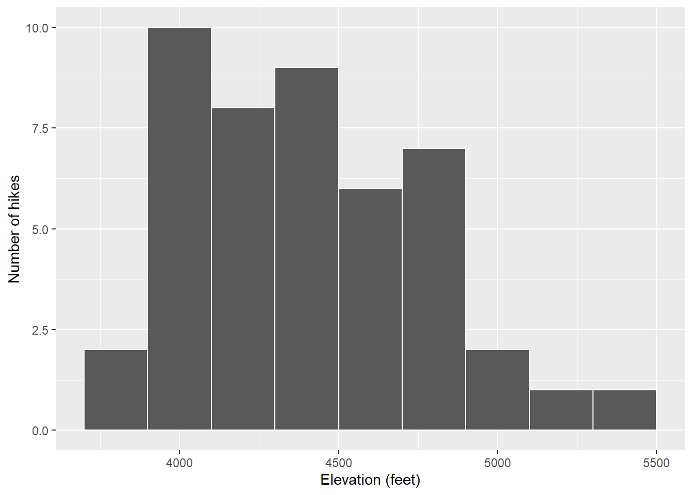

What features would we like a visualization of the categorical difficulty rating variable to capture? - A visualization of the categorical difficulty rating variable should capture the different mountains sorted into categories based on difficulty; it would help to include a key tied to the rating.
What about a visualization of the quantitativeelevation variable? - A visualization of the quantitative elevation variable should capture the variation between the various mountains as a direct comparison.This would have the peak name on the x axis and the elevation on the y axis.
Exercise 2: Load tidyverse
We’ll address the above questions using ggplot tools. Try running the following chunk and simply take note of the error message – this is one you’ll get a lot!
# Use the ggplot functionggplot(hikes, aes(x = rating))
In order to use ggplot tools, we have to first load the tidyverse package in which they live. We’ve installed the package but we need to tell R when we want to use it. Run the chunk below to load the library. You’ll need to do this within any .qmd file that uses ggplot().
# Load the packagelibrary(tidyverse)
Exercise 3: Bar Chart of Ratings - Part 1
Consider some specific research questions about the difficulty rating of the hikes:
How many hikes fall into each category?
Are the hikes evenly distributed among these categories, or are some more common than others?
All of these questions can be answered with: (1) a bar chart; of (2) the categorical data recorded in the rating column. First, set up the plotting frame:
ggplot(hikes, aes(x = rating))
Think about:
What did this do? What do you observe?
What, in general, is the first argument of the ggplot() function?
What is the purpose of writing x = rating?
What do you think aes stands for?!?
Exercise 4: Bar Chart of Ratings - Part 2
Now let’s add a geometric layer to the frame / canvas, and start customizing the plot’s theme. To this end, try each chunk below, one by one. In each chunk, make a comment about how both the code and the corresponding plot both changed.
NOTE:
Pay attention to the general code properties and structure, not memorization.
Not all of these are “good” plots. We’re just exploring ggplot.
# Adds geom_bar() which adds the data as barsggplot(hikes, aes(x = rating)) +geom_bar()
# adds labs(x = "",y = "") which labels both axesggplot(hikes, aes(x = rating)) +geom_bar() +labs(x ="Rating", y ="Number of hikes")

# Adds fill = "blue" to geom_bar which changes the color of the barsggplot(hikes, aes(x = rating)) +geom_bar(fill ="blue") +labs(x ="Rating", y ="Number of hikes")
# adds color = "orange" to geom_bar which makes the outline of the bars orangeggplot(hikes, aes(x = rating)) +geom_bar(color ="orange", fill ="blue") +labs(x ="Rating", y ="Number of hikes")

# adds theme_minimal() which changes the overall theme of the plotggplot(hikes, aes(x = rating)) +geom_bar(color ="orange", fill ="blue") +labs(x ="Rating", y ="Number of hikes") +theme_minimal()
Exercise 5: Bar Chart Follow-up
Part a
Reflect on the ggplot() code.
What’s the purpose of the +? When do we use it?
this adds an element to the plot
We added the bars using geom_bar()? Why “geom”?
geom for geometric
What does labs() stand for?
labs means label
What’s the difference between color and fill?
color is the outline, fill is the body color
Part b
In general, bar charts allow us to examine the following properties of a categorical variable:
observed categories: What categories did we observe?
We observed the categories difficult, moderate, and easy
variability between categories: Are observations evenly spread out among the categories, or are some categories more common than others?
some vategories are more common than others, as seen by the distribution
We must then translate this information into the context of our analysis, here hikes in the Adirondacks. Summarize below what you learned from the bar chart, in context.
The bar chart illustrated that of this list of potential hikes, over 25 of them are moderate difficulty, with the next most common category being easy with just over 10 of the hikes, and finally a bit under 10 of the hikes are difficult rating.
Part c
Is there anything you don’t like about this barplot? For example: check out the x-axis again.
I want to have it start with easiest and move to harder hikes
Exercise 6: Sad Bar Chart
Let’s now consider some research questions related to the quantitativeelevation variable:
Among the hikes, what’s the range of elevation and how are the hikes distributed within this range (e.g. evenly, in clumps, “normally”)?
What’s a typical elevation?
Are there any outliers, i.e. hikes that have unusually high or low elevations?
Here:
Construct a bar chart of the quantitativeelevation variable.
Explain why this might not be an effective visualization for this and other quantitative variables. (What questions does / doesn’t it help answer?)
This chart is super hard to read and doesn’t help show which mountains have which elevation
ggplot(hikes, aes(x = elevation)) +geom_bar(color ="orange", fill ="blue") +labs(x ="Elevation", y ="Number of hikes") +theme_minimal()

Exercise 7: A Histogram of Elevation
Quantitative variables require different viz than categorical variables. Especially when there are many possible outcomes of the quantitative variable. It’s typically insufficient to simply count up the number of times we’ve observed a particular outcome as the bar graph did above. It gives us a sense of ranges and typical outcomes, but not a good sense of how the observations are distributed across this range. We’ll explore two methods for graphing quantitative variables: histograms and density plots.
Histograms are constructed by (1) dividing up the observed range of the variable into ‘bins’ of equal width; and (2) counting up the number of cases that fall into each bin. Check out the example below:
Part a
Let’s dig into some details.
How many hikes have an elevation between 4500 and 4700 feet? - between 5 and 7.5 hikes
How many total hikes have an elevation of at least 5100 feet? - at least 2
Part b
Now the bigger picture. In general, histograms allow us to examine the following properties of a quantitative variable:
typical outcome: Where’s the center of the data points? What’s typical?
The center appears around 4,500
variability & range: How spread out are the outcomes? What are the max and min outcomes?
It ranges from below 4,000 feet to 5,500 feet.
shape: How are values distributed along the observed range? Is the distribution symmetric, right-skewed, left-skewed, bi-modal, or uniform (flat)?
It is right skewed
outliers: Are there any outliers, i.e. outcomes that are unusually large/small?
It doesn’t seem so
We must then translate this information into the context of our analysis, here hikes in the Adirondacks. Addressing each of the features in the above list, summarize below what you learned from the histogram, in context.
This histogram of various peaks with hiking routes range in elevation from under 4,000 to just under 5,500. The data has a right skew and does not seem to have outliers.
Exercise 8: Building Histograms - Part 1
2-MINUTE CHALLENGE: Thinking of the bar chart code, try to intuit what line you can tack on to the below frame of elevation to add a histogram layer. Don’t forget a +. If it doesn’t come to you within 2 minutes, no problem – all will be revealed in the next exercise.
ggplot(hikes, aes(x = elevation))

Exercise 9: Building Histograms - Part 2
Let’s build some histograms. Try each chunk below, one by one. In each chunk, make a comment about how both the code and the corresponding plot both changed.
# added geom_histogram() to the plotggplot(hikes, aes(x = elevation)) +geom_histogram()
`stat_bin()` using `bins = 30`. Pick better value with `binwidth`.

# added color to the histogram which gave them a white outlineggplot(hikes, aes(x = elevation)) +geom_histogram(color ="white")
`stat_bin()` using `bins = 30`. Pick better value with `binwidth`.
# added fill to the histogram making the chart blueggplot(hikes, aes(x = elevation)) +geom_histogram(color ="white", fill ="blue")
`stat_bin()` using `bins = 30`. Pick better value with `binwidth`.

# added labs to the plot, labelling the plotggplot(hikes, aes(x = elevation)) +geom_histogram(color ="white") +labs(x ="Elevation (feet)", y ="Number of hikes")
`stat_bin()` using `bins = 30`. Pick better value with `binwidth`.
# switched the binwidth to 1000, which means it categorizes the data into 1000 value rangesggplot(hikes, aes(x = elevation)) +geom_histogram(color ="white", binwidth =1000) +labs(x ="Elevation (feet)", y ="Number of hikes")
# switched the binwidth to 5, which sorts the values into groupings of 5ggplot(hikes, aes(x = elevation)) +geom_histogram(color ="white", binwidth =5) +labs(x ="Elevation (feet)", y ="Number of hikes")
# changed bin width to 200ggplot(hikes, aes(x = elevation)) +geom_histogram(color ="white", binwidth =200) +labs(x ="Elevation (feet)", y ="Number of hikes")
Exercise 10: Histogram Follow-up
What function added the histogram layer / geometry?
geom_histogram
What’s the difference between color and fill?
color is the outline, fill is the body color
Why does adding color = "white" improve the visualization?
adding that allows for a clearer visual distinction between each bar
What did binwidth do?
this changes the groupings of data chunks
Why does the histogram become ineffective if the binwidth is too big (e.g. 1000 feet)?
Because it is such a large data range, it is hard to get much information
Why does the histogram become ineffective if the binwidth is too small (e.g. 5 feet)?
The categories are so small the data is no longer visually readable
Exercise 11: Density Plots
Density plots are essentially smooth versions of the histogram. Instead of sorting observations into discrete bins, the “density” of observations is calculated across the entire range of outcomes. The greater the number of observations, the greater the density! The density is then scaled so that the area under the density curve always equals 1 and the area under any fraction of the curve represents the fraction of cases that lie in that range.
Check out a density plot of elevation. Notice that the y-axis (density) has no contextual interpretation – it’s a relative measure. The higher the density, the more common are elevations in that range.
ggplot(hikes, aes(x = elevation)) +geom_density()

Questions
INTUITION CHECK: Before tweaking the code and thinking back to geom_bar() and geom_histogram(), how do you anticipate the following code will change the plot?
geom_density(color = "blue")
geom_density(fill = "orange")
TRY IT! Test out those lines in the chunk below. Was your intuition correct?
ggplot(hikes, aes(x = elevation)) +geom_density(color ="blue", fill ="orange")
Examine the density plot. How does it compare to the histogram? What does it tell you about the typical elevation, variability / range in elevations, and shape of the distribution of elevations within this range?
this chart, in comparison to the histogram, better illustrates the distribution of elevation. It makes it harder to view the range and categories, but for many reasons this might be a superior plot. You can more easily see the typical elevation and the shape of the distribution.
Exercise 12: Density Plots vs Histograms
The histogram and density plot both allow us to visualize the behavior of a quantitative variable: typical outcome, variability / range, shape, and outliers. What are the pros/cons of each? What do you like/not like about each?
It depends on your goal to decide which is best for each situation
Exercise 13: Code = communication
We obviously won’t be done until we talk about communication. All code above has a similar general structure (where the details can change):
ggplot(___, aes(x = ___)) +geom___(color ="___", fill ="___") +labs(x ="___", y ="___")
Though not necessary to the code working, it’s common, good practice to indent or tab the lines of code after the first line (counterexample below). Why? - for better reading
ggplot(hikes, aes(x = elevation)) +geom_histogram(color ="white", binwidth =200) +labs(x ="Elevation (feet)", y ="Number of hikes")

Though not necessary to the code working, it’s common, good practice to put a line break after each + (counterexample below). Why? - it auto tabs and makes the spacing better so each distinct function remains separate
ggplot(hikes, aes(x = elevation)) +geom_histogram(color ="white", binwidth =200) +labs(x ="Elevation (feet)", y ="Number of hikes")
Exercise 14: Practice
Part a
Practice your viz skills to learn about some of the variables in one of the following datasets from the previous class:
# Data on students in this classsurvey <-read.csv("https://hash-mac.github.io/stat112site-s25/data/survey.csv")# World Cup dataworld_cup <-read.csv("https://raw.githubusercontent.com/rfordatascience/tidytuesday/master/data/2022/2022-11-29/worldcups.csv")
---title: "Univariate Viz"---Use this file for practice with the **univariate viz** in-class activity.Refer to the class website [here](https://hash-mac.github.io/stat112site-s25/activities/03-univariate-viz.html#exercises) for details.## Exercises```{r}#| eval: true# Import datahikes <-read.csv("https://mac-stat.github.io/data/high_peaks.csv")##load tidyverselibrary(tidyverse)```### Exercise 1: Research Questions {.unnumbered}Let's dig into the `hikes` data, starting with the `elevation` and difficulty `ratings` of the hikes:```{r}#| eval: truehead(hikes)```a. What features would we like a visualization of the *categorical* difficulty `rating` variable to capture? - A visualization of the categorical difficulty rating variable should capture the different mountains sorted into categories based on difficulty; it would help to include a key tied to the rating.b. What about a visualization of the *quantitative* `elevation` variable? - A visualization of the quantitative elevation variable should capture the variation between the various mountains as a direct comparison.This would have the peak name on the x axis and the elevation on the y axis.### Exercise 2: Load tidyverse {.unnumbered}We'll address the above questions using `ggplot` tools.Try running the following chunk and simply take note of the error message -- this is one you'll get a lot!```{r}# Use the ggplot functionggplot(hikes, aes(x = rating))```In order to use `ggplot` tools, we have to first *load* the `tidyverse` package in which they live.We've *installed* the package but we need to tell R when we want to *use* it.Run the chunk below to load the library.You'll need to do this within any .qmd file that uses `ggplot()`.```{r}#| eval: true#| message: false# Load the packagelibrary(tidyverse)```### Exercise 3: Bar Chart of Ratings - Part 1 {.unnumbered}Consider some specific research questions about the difficulty `rating` of the hikes:1. How many hikes fall into each category?2. Are the hikes evenly distributed among these categories, or are some more common than others?All of these questions can be answered with: (1) a **bar chart**; of (2) the *categorical* data recorded in the `rating` column.First, set up the plotting **frame**:```{r}ggplot(hikes, aes(x = rating))```Think about:- What did this do? What do you observe?- What, in general, is the first argument of the `ggplot()` function?- What is the purpose of writing `x = rating`?- What do you think `aes` stands for?!?### Exercise 4: Bar Chart of Ratings - Part 2 {.unnumbered}Now let's add a **geometric layer** to the frame / canvas, and start customizing the plot's **theme**.To this end, try each chunk below, *one by one*.In each chunk, make a comment about how both the code and the corresponding plot both changed.NOTE:- Pay attention to the general code properties and structure, not memorization.- Not all of these are "good" plots. We're just exploring `ggplot`.```{r}# Adds geom_bar() which adds the data as barsggplot(hikes, aes(x = rating)) +geom_bar()``````{r}# adds labs(x = "",y = "") which labels both axesggplot(hikes, aes(x = rating)) +geom_bar() +labs(x ="Rating", y ="Number of hikes")``````{r}# Adds fill = "blue" to geom_bar which changes the color of the barsggplot(hikes, aes(x = rating)) +geom_bar(fill ="blue") +labs(x ="Rating", y ="Number of hikes")``````{r}# adds color = "orange" to geom_bar which makes the outline of the bars orangeggplot(hikes, aes(x = rating)) +geom_bar(color ="orange", fill ="blue") +labs(x ="Rating", y ="Number of hikes")``````{r}# adds theme_minimal() which changes the overall theme of the plotggplot(hikes, aes(x = rating)) +geom_bar(color ="orange", fill ="blue") +labs(x ="Rating", y ="Number of hikes") +theme_minimal()```### Exercise 5: Bar Chart Follow-up {.unnumbered}#### Part a {.unnumbered}Reflect on the `ggplot()` code.- What's the purpose of the `+`? When do we use it? - this adds an element to the plot- We added the bars using `geom_bar()`? Why "geom"? - geom for geometric- What does `labs()` stand for? - labs means label- What's the difference between `color` and `fill`? - color is the outline, fill is the body color#### Part b {.unnumbered}In general, bar charts allow us to examine the following properties of a *categorical* variable:- **observed categories**: What categories did we observe? - We observed the categories difficult, moderate, and easy- **variability between categories**: Are observations evenly spread out among the categories, or are some categories more common than others? - some vategories are more common than others, as seen by the distribution We must then *translate* this information into the *context* of our analysis, here hikes in the Adirondacks.Summarize below what you learned from the bar chart, in context.The bar chart illustrated that of this list of potential hikes, over 25 of them are moderate difficulty, with the next most common category being easy with just over 10 of the hikes, and finally a bit under 10 of the hikes are difficult rating. #### Part c {.unnumbered}Is there anything you don't like about this barplot?For example: check out the x-axis again.- I want to have it start with easiest and move to harder hikes### Exercise 6: Sad Bar Chart {.unnumbered}Let's now consider some research questions related to the *quantitative* `elevation` variable:1. Among the hikes, what's the *range* of elevation and how are the hikes *distributed* within this range (e.g. evenly, in clumps, "normally")?2. What's a *typical* elevation?3. Are there any *outliers*, i.e. hikes that have unusually high or low elevations?Here:- Construct a **bar chart** of the *quantitative* `elevation` variable.- Explain why this might *not* be an effective visualization for this and other quantitative variables. (What questions does / doesn't it help answer?) - This chart is super hard to read and doesn't help show which mountains have which elevation```{r}ggplot(hikes, aes(x = elevation)) +geom_bar(color ="orange", fill ="blue") +labs(x ="Elevation", y ="Number of hikes") +theme_minimal()```### Exercise 7: A Histogram of Elevation {.unnumbered}Quantitative variables require different viz than categorical variables.Especially when there are many possible outcomes of the quantitative variable.It's typically insufficient to simply count up the number of times we've observed a particular outcome as the bar graph did above.It gives us a sense of ranges and typical outcomes, but not a good sense of how the observations are distributed across this range.We'll explore two methods for graphing quantitative variables: **histograms** and **density plots**.**Histograms** are constructed by (1) dividing up the observed range of the variable into 'bins' of equal width; and (2) counting up the number of cases that fall into each bin.Check out the example below:{width="50%"}#### Part a {.unnumbered}Let's dig into some details.- How many hikes have an elevation between 4500 and 4700 feet? - between 5 and 7.5 hikes- How many total hikes have an elevation of at least 5100 feet? - at least 2#### Part b {.unnumbered}Now the bigger picture.In general, histograms allow us to examine the following properties of a *quantitative* variable:- **typical outcome:** Where’s the center of the data points? What's typical? - The center appears around 4,500- **variability & range:** How spread out are the outcomes? What are the max and min outcomes? - It ranges from below 4,000 feet to 5,500 feet. - **shape:** How are values distributed along the observed range? Is the distribution symmetric, right-skewed, left-skewed, bi-modal, or uniform (flat)? - It is right skewed- **outliers:** Are there any outliers, i.e. outcomes that are unusually large/small? - It doesn't seem soWe must then *translate* this information into the *context* of our analysis, here hikes in the Adirondacks.Addressing each of the features in the above list, summarize below what you learned from the histogram, in context.This histogram of various peaks with hiking routes range in elevation from under 4,000 to just under 5,500. The data has a right skew and does not seem to have outliers. ### Exercise 8: Building Histograms - Part 1 {.unnumbered}2-MINUTE CHALLENGE: Thinking of the bar chart code, try to *intuit* what line you can tack on to the below frame of `elevation` to add a histogram layer.Don't forget a `+`.If it doesn't come to you within 2 minutes, *no problem* -- all will be revealed in the next exercise.```{r}ggplot(hikes, aes(x = elevation))```### Exercise 9: Building Histograms - Part 2 {.unnumbered}Let's build some histograms.Try each chunk below, *one by one*.In each chunk, make a comment about how both the code and the corresponding plot both changed.```{r}# added geom_histogram() to the plotggplot(hikes, aes(x = elevation)) +geom_histogram()``````{r}# added color to the histogram which gave them a white outlineggplot(hikes, aes(x = elevation)) +geom_histogram(color ="white") ``````{r}# added fill to the histogram making the chart blueggplot(hikes, aes(x = elevation)) +geom_histogram(color ="white", fill ="blue") ``````{r}# added labs to the plot, labelling the plotggplot(hikes, aes(x = elevation)) +geom_histogram(color ="white") +labs(x ="Elevation (feet)", y ="Number of hikes")``````{r}# switched the binwidth to 1000, which means it categorizes the data into 1000 value rangesggplot(hikes, aes(x = elevation)) +geom_histogram(color ="white", binwidth =1000) +labs(x ="Elevation (feet)", y ="Number of hikes")``````{r}# switched the binwidth to 5, which sorts the values into groupings of 5ggplot(hikes, aes(x = elevation)) +geom_histogram(color ="white", binwidth =5) +labs(x ="Elevation (feet)", y ="Number of hikes")``````{r}# changed bin width to 200ggplot(hikes, aes(x = elevation)) +geom_histogram(color ="white", binwidth =200) +labs(x ="Elevation (feet)", y ="Number of hikes")```### Exercise 10: Histogram Follow-up {.unnumbered}- What function added the histogram layer / geometry? - geom_histogram- What's the difference between `color` and `fill`? - color is the outline, fill is the body color- Why does adding `color = "white"` improve the visualization? - adding that allows for a clearer visual distinction between each bar- What did `binwidth` do? - this changes the groupings of data chunks- Why does the histogram become ineffective if the `binwidth` is too big (e.g. 1000 feet)? - Because it is such a large data range, it is hard to get much information - Why does the histogram become ineffective if the `binwidth` is too small (e.g. 5 feet)? - The categories are so small the data is no longer visually readable### Exercise 11: Density Plots {.unnumbered}**Density plots** are essentially smooth versions of the histogram.Instead of sorting observations into discrete bins, the "density" of observations is calculated across the entire range of outcomes.The greater the number of observations, the greater the density!The density is then scaled so that the area under the density curve **always equals 1** and the area under any fraction of the curve represents the fraction of cases that lie in that range.Check out a density plot of elevation.Notice that the y-axis (density) has no contextual interpretation -- it's a relative measure.The *higher* the density, the more *common* are elevations in that range.```{r}ggplot(hikes, aes(x = elevation)) +geom_density()```**Questions**- INTUITION CHECK: Before tweaking the code and thinking back to `geom_bar()` and `geom_histogram()`, how do you *anticipate* the following code will change the plot? - `geom_density(color = "blue")` - `geom_density(fill = "orange")`- TRY IT! Test out those lines in the chunk below. Was your intuition correct?```{r}ggplot(hikes, aes(x = elevation)) +geom_density(color ="blue", fill ="orange")```- Examine the density plot. How does it compare to the histogram? What does it tell you about the *typical* elevation, *variability / range* in elevations, and *shape* of the distribution of *elevations* within this range? - this chart, in comparison to the histogram, better illustrates the distribution of elevation. It makes it harder to view the range and categories, but for many reasons this might be a superior plot. You can more easily see the typical elevation and the shape of the distribution. ### Exercise 12: Density Plots vs Histograms {.unnumbered}The histogram and density plot both allow us to visualize the behavior of a quantitative variable: typical outcome, variability / range, shape, and outliers.What are the pros/cons of each?What do you like/not like about each?- It depends on your goal to decide which is best for each situation### Exercise 13: Code = communication {.unnumbered}We *obviously* won't be done until we talk about communication.All code above has a similar *general* structure (where the details can change):```{r}#| eval: falseggplot(___, aes(x = ___)) +geom___(color ="___", fill ="___") +labs(x ="___", y ="___")```- Though not *necessary* to the code working, it's common, good practice to *indent* or *tab* the lines of code after the first line (counterexample below). Why? - for better reading```{r}ggplot(hikes, aes(x = elevation)) +geom_histogram(color ="white", binwidth =200) +labs(x ="Elevation (feet)", y ="Number of hikes")```- Though not *necessary* to the code working, it's common, good practice to put a *line break* after each `+` (counterexample below). Why? - it auto tabs and makes the spacing better so each distinct function remains separate```{r}ggplot(hikes, aes(x = elevation)) +geom_histogram(color ="white", binwidth =200) +labs(x ="Elevation (feet)", y ="Number of hikes")```### Exercise 14: Practice {.unnumbered}#### Part a {.unnumbered}Practice your viz skills to learn about some of the variables in one of the following datasets from the previous class:```{r}# Data on students in this classsurvey <-read.csv("https://hash-mac.github.io/stat112site-s25/data/survey.csv")# World Cup dataworld_cup <-read.csv("https://raw.githubusercontent.com/rfordatascience/tidytuesday/master/data/2022/2022-11-29/worldcups.csv")```#### Part b {.unnumbered}Check out the [RStudio Data Visualization cheat sheet](https://raw.githubusercontent.com/rstudio/cheatsheets/main/data-visualization.pdf) to learn more features of `ggplot`.